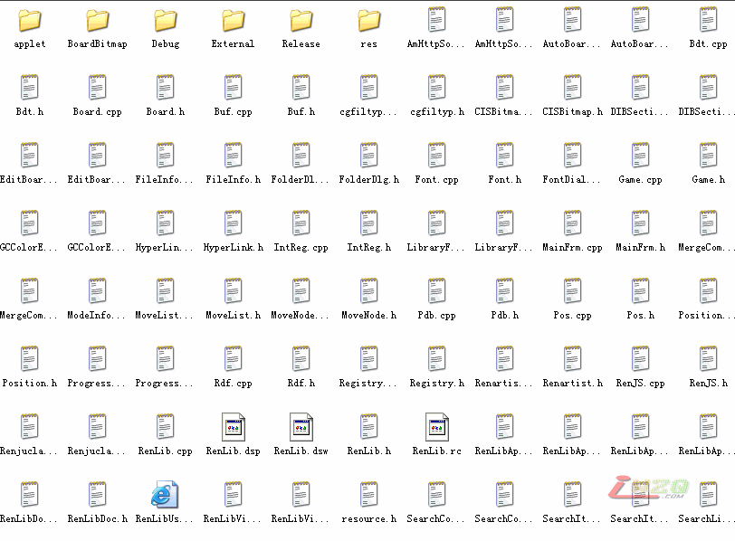

renlib3.6的源代码
首页
五子棋软件
#1 renlib3.6的源代码 作者：有志青年 发表时间：2008-2-5 17:12:03

本站下载源代码：
点击下载
#2 Re:renlib3.6的源代码 作者：我爱棋 发表时间：2008-2-5 17:57:00
请问这是做什么用的？源代码是什么意思？
#3 Re:renlib3.6的源代码 作者：笑笑笑笑 发表时间：2009-1-19 20:54:19
MD，我要读这个源代码，然后争取造个比黑石还要牛的五子棋软件来。
#4 Re:renlib3.6的源代码 作者：笑笑笑笑 发表时间：2009-1-19 21:02:35
有志老大，你不会是做编程一类工作的吧。
#5 Re:renlib3.6的源代码 作者：news 发表时间：2009-2-19 4:12:20
cpp了。明显是c++
renlib是打谱软又不是对弈软件，哎。。楼上加油！
#6 Re:renlib3.6的源代码 作者：h 发表时间：2009-3-1 3:23:26
是VC6的
#7 Re:renlib3.6的源代码 作者：lyx655 发表时间：2009-7-7 23:07:52
大家一起来给它加上中文说明啊
#8 Re:renlib3.6的源代码 作者：谁比我更菜 发表时间：2009-7-24 23:33:46
看看代码有多少。
#9 Re:renlib3.6的源代码 作者：钟情 发表时间：2010-12-31 21:24:03
老大，这个源代码有很多问题啊？
#10 Re:renlib3.6的源代码 作者：血小贱 发表时间：2013-9-30 18:59:56
厉害啊
#11 Re:renlib3.6的源代码 作者：屏蔽 发表时间：2013-9-30 19:51:09
楼上你要是再怎么搞那就不是威望的问题了